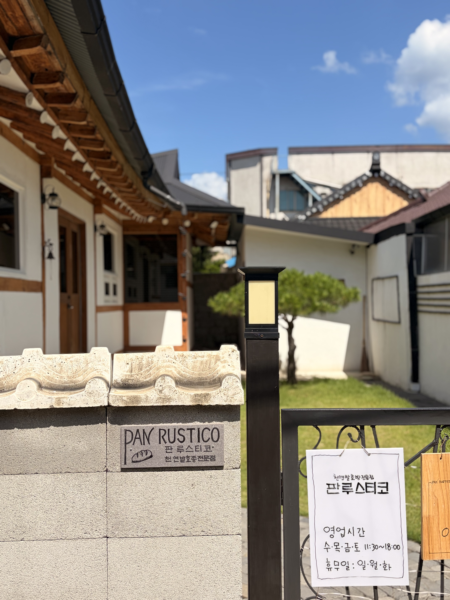
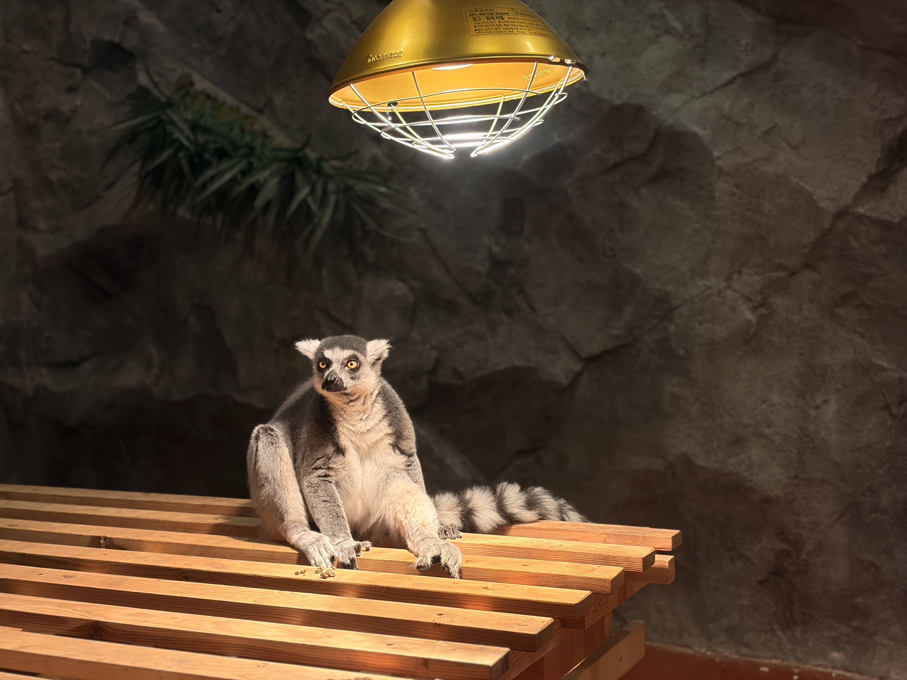
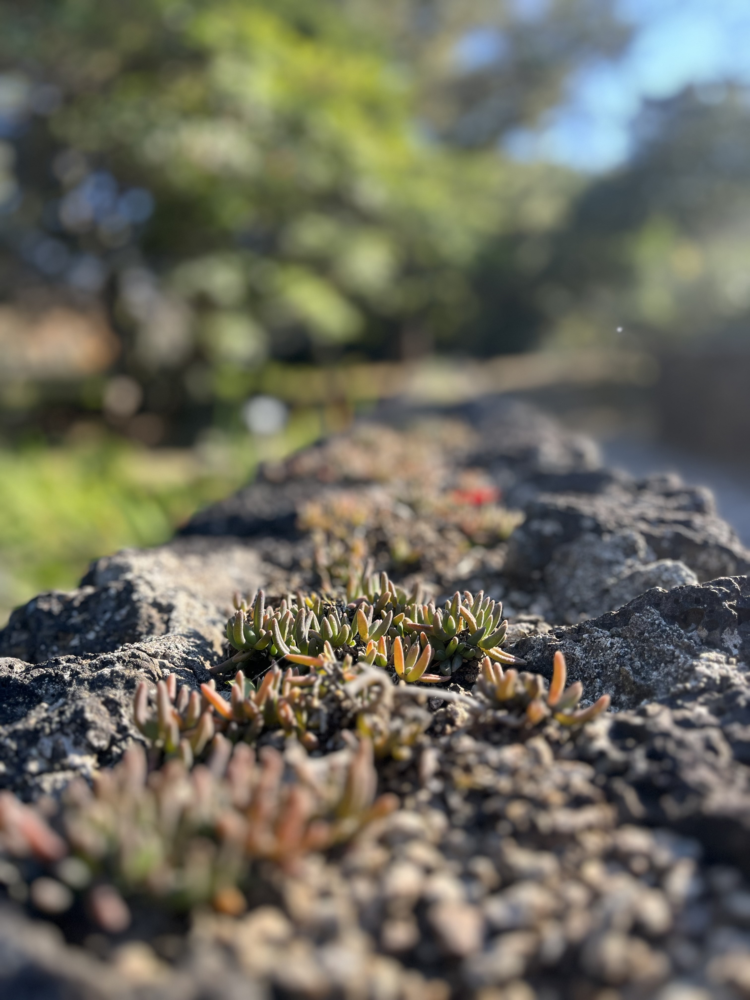

🎵 여행을 위한 음악
음악을 재생하며 여행 사진을 감상해 보세요.
📷 나의 여행 사진
카드에 마우스를 올리면 해당 여행지가 강조됩니다.

화순 판루스티코 베이커리 · 2026.07

울산 캐니언파크 울산 여행 · 2026.07

제주 한라수목원 제주 여행 · 2025.11🎥 나의 여행 브이로그
여행 중 기억에 남는 장면을 영상으로 기록했습니다.
WORLD IT SHOW 2026
새로운 기술과 체험형 콘텐츠를 둘러보며 기억에 남은 순간을 영상으로 담았습니다.